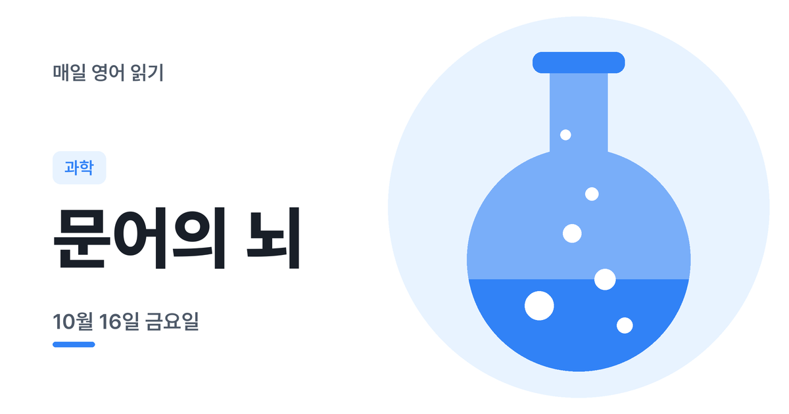
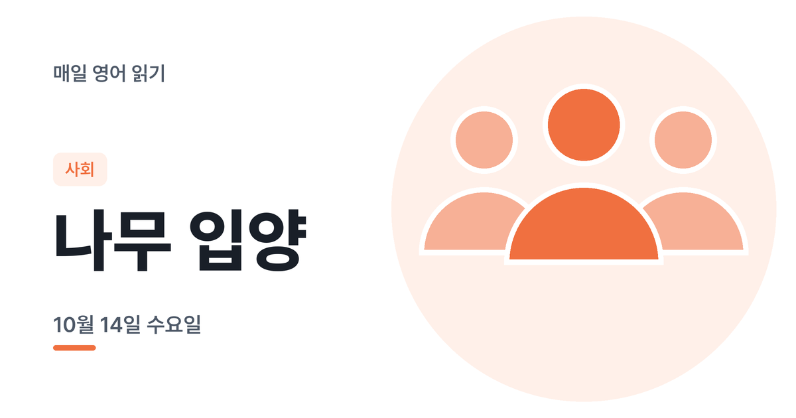
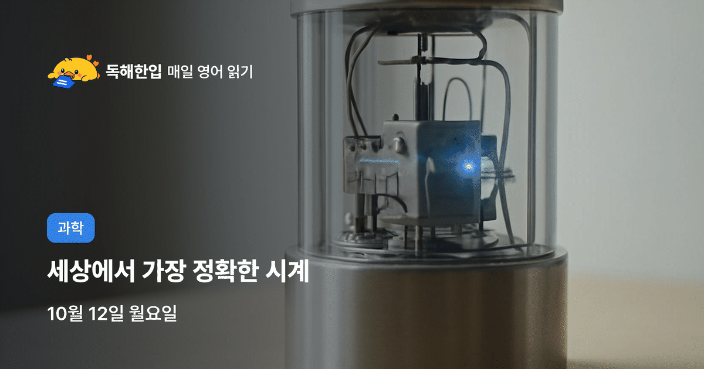
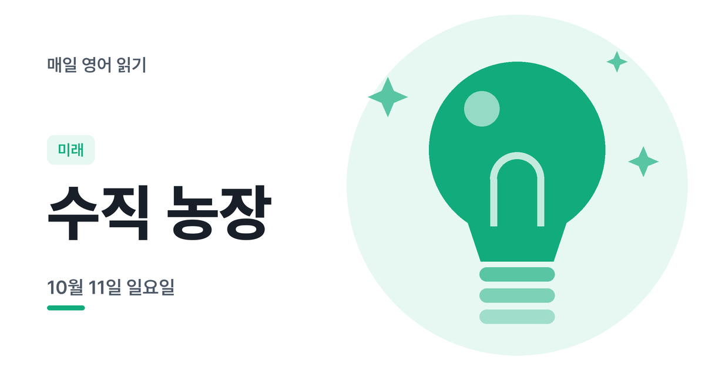
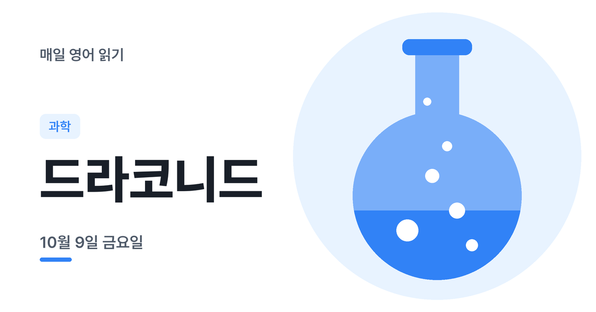
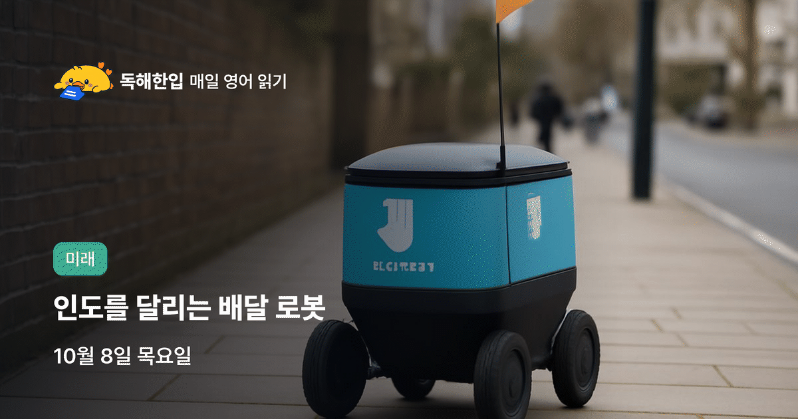
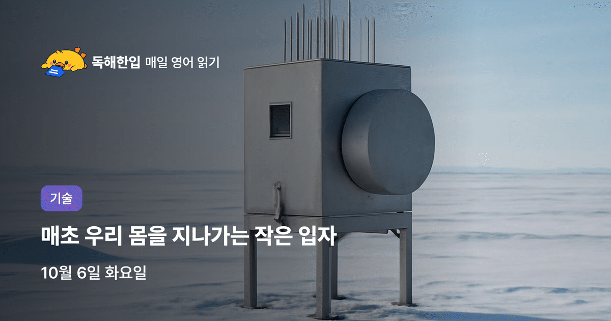
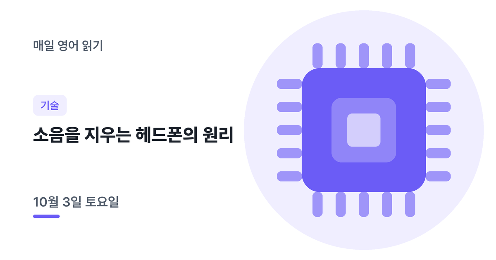

지난 지문
매일 아침 새로 올라오는 B1~B2 영어 읽기예요. 메일로 받기 다른 언어
2026년 10월

10월 16일 금요일과학문어의 뇌 10월 15일 목요일미래로보택시
10월 14일 수요일사회나무 입양 10월 13일 화요일기술레이저 안테나
10월 13일 화요일기술레이저 안테나

10월 12일 월요일과학핵시계
10월 11일 일요일미래수직 농장 10월 10일 토요일일상과 문화아트 페어
10월 9일 금요일과학드라코니드
10월 8일 목요일미래로보택시 10월 7일 수요일사회야생동물 사진
10월 7일 수요일사회야생동물 사진

10월 6일 화요일기술중성미자 10월 5일 월요일과학광유전학 10월 4일 일요일우주로만 망원경
10월 4일 일요일우주로만 망원경

10월 3일 토요일기술노이즈 캔슬링찾는 지문이 없어요.
매일 아침 영어 지문 받기
새 영어 지문이 올라오면 아침에 메일로 보내 드려요.
지금은 이메일 주소 하나로 한 언어만 구독할 수 있어요. 두 언어를 받으려면 서로 다른 이메일로 구독해 주세요.
구독하면 영문 확인 메일(Confirm your subscription)이 가요. 메일 속 버튼을 눌러야 구독이 끝나요. 메일이 안 보이면 스팸함도 확인해 주세요.
이메일은 뉴스레터 발송에만 쓰이고, 언제든 메일 하단에서 수신거부할 수 있어요.